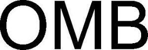

Trade Mark Journal No.2025/048 28 November 2025
WO0000001870213 (16,17,42)
Office of origin: Switzerland
Date of International Registration:14 April 2025
Date of designation in the UK:
14 April 2025

International priority date claimed: 29 October 2024
(Switzerland)
(823699)
- Class 16
- Packaging materials of plastic, paper or cardboard for the pharmaceutical industry; plastic materials for packaging; plastic sheets, films and bags for wrapping and packaging; plastic sheets for use in food packaging; laminated plastic film packaging materials; laminated and film blister packaging; paper capsules and all other packaging materials included in this class; protective films for pharmaceutical blister packaging; single-layer or multilayer polymer films for use in the preparation of packaging for consumer goods; single layer or multilayer polymer film, paper-based film or film blister packaging; pharmaceutical and medical blister packs; plastic blister packs for packaging; blister packaging of polypropylene film; polypropylene foil for packaging; polyethylene terephthalate (PET) blister packs; polyethylene terephthalate (PET) films for packaging; blister packaging made of recycled plastic; recycled plastic films for packaging.
- Class 17
- Packing, stopping and insulating materials; plastic film other than for wrapping; plastic films for use as laminates; plastic layers for laminates; plastic material in extruded form for general industrial use; films for use as moisture and gas barriers; polypropylene films, other than for packaging; polyethylene terephthalate (PET) films, other than for packaging; recycled plastic films, other than for packaging; shrink film for labels and soft capsules; foils of metal for insulating; multi-layer composite films and panels consisting of layers of polymers, films and paper, coated or uncoated, used for the processing industry; biodegradable polymer films for use in the processing industry; stiff polymer films for use in the manufacture of credit cards, debit cards, customer cards; polymer coating films, coated and non-coated, for use in the processing industry; rolls and sheets of polymer films for use in the processing industry; transparent, translucent, opaque and colored polymer films for use in the processing industry; printed films used for the processing industry.
- Class 42
- Scientific and technological services as well as research and design services relating thereto; research and development in the field of packaging for medicines; industrial analysis, industrial research and industrial design services; design of packaging; design and development of computers and software; scientific laboratory services; quality control and authentication services; consulting services concerning pharmaceutical packaging development.
Liveo Research AG
Representative: Walder Wyss AG, Seefeldstrasse 123, Postfach, CH-8034 Zürich, SWITZERLAND